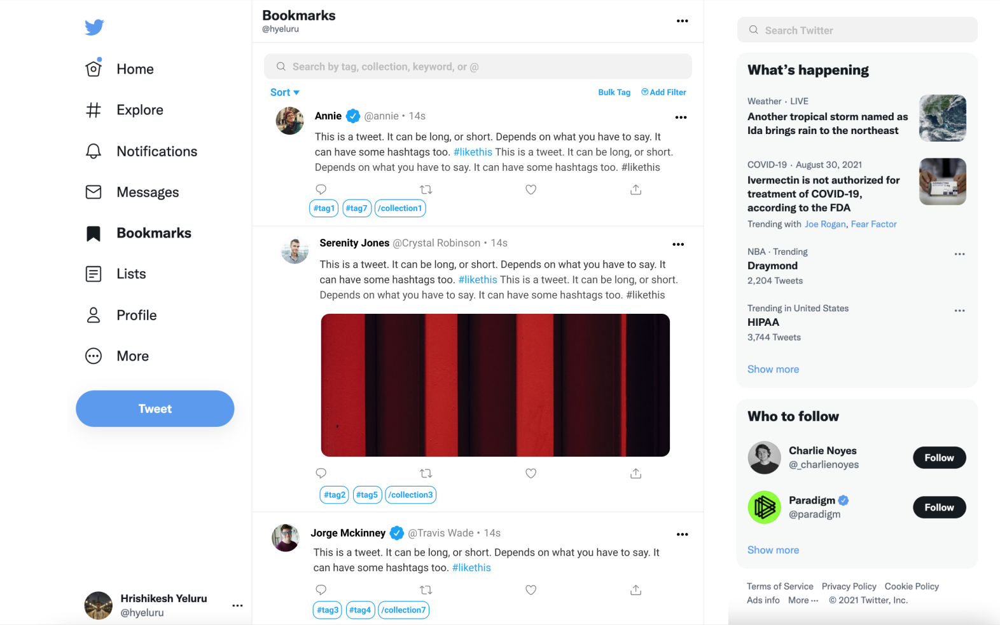

twitter bookmarks - problem

The purpose of this project was to fix the boookmark feature on twitter. This feature has always caused me issues and makes twitter feel cumbersome to use. It feels like bookmarks can only be used as a temporary reading list where you add long tweets when you don’t have time, but once it becomes too long, its unusable. It’s too hard to find stuff unless you remember the exact order of the tweets you added to the list. The other issue with bookmarks is that since you can’t add too many tweets you can’t save stuff there to reference later.
twitter bookmarks - solution
The solution to this issue is being able to search, label, and filter your bookmarks. To the right is a mockup of how these features could be integrated into Twitter bookmarks. Each tweet can be added to a collection and labeled wiith tags. These tags and collections can be searched at the top to find what your looking for easier. Also, there could be a filter feature that only shows tweets with images, videos, threads, or links.